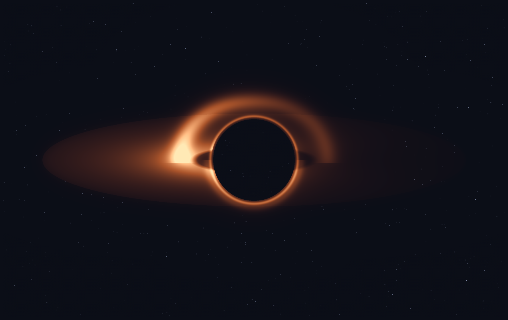
Why our best theories break down inside a black hole, and what that really means.
The laws of nature don't switch off at a black hole. What fails is our description of them. At the centre, Einstein's general relativity predicts infinities it cannot make sense of, and quantum mechanics has never been joined up with it. This guide explains why, step by step and in plain language.
“The laws of physics break down in a black hole.”
Better: our current theories stop giving sensible answers at the centre of a black hole.
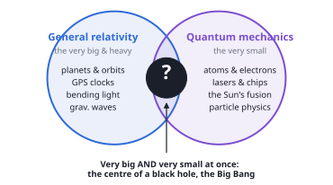
Not at the event horizon. The horizon is the famous point of no return, but the equations there are perfectly well behaved. A falling astronaut wouldn't notice anything special when crossing it.
At the singularity. There, general relativity predicts infinite curvature, and paths through spacetime simply end. An infinity in an equation usually means the theory has gone beyond the range where it works.
Einstein replaced Newton's invisible pulling force with something stranger: mass bends space and time, and everything moves along the bends.
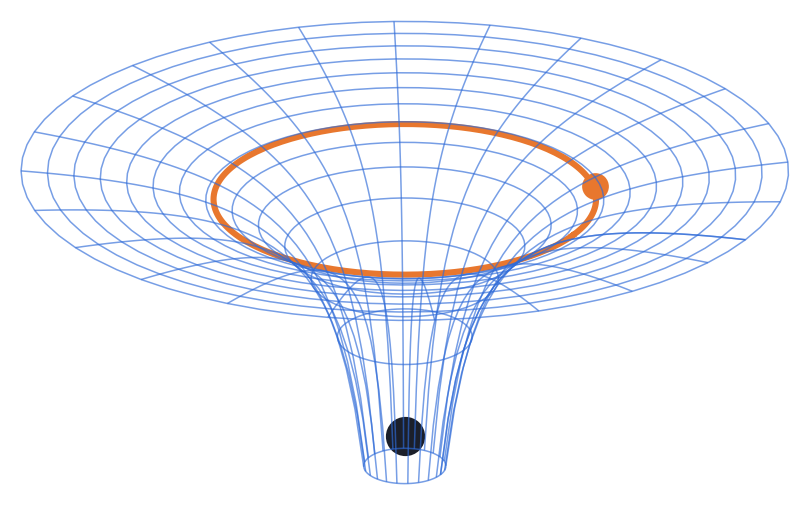
In general relativity, matter and energy tell spacetime how to curve, and curved spacetime tells matter and light how to move. A planet orbiting a star isn't being tugged on a string. It is moving as straight as it can through curved spacetime. Such a “straightest possible path” is called a geodesic.
Near a black hole that curvature becomes extremely strong. That's where the theory gets pushed hardest, and eventually past its limits.
A black hole doesn't form just because a star is big. It forms when nothing is left that can hold back gravity.
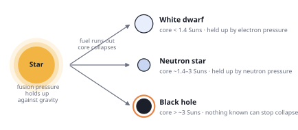
For most of a star's life, heat and pressure from nuclear fusion push outward and balance gravity's inward pull. When the fuel runs low, the core contracts. Depending on its mass it becomes a white dwarf, a neutron star, or it keeps collapsing.
Past a certain point the collapse creates a trapped region: a zone where even light aimed outward is forced inward.
Oppenheimer and Snyder calculated the collapse of an idealised, perfectly round cloud of pressureless dust. It's not a realistic star, but it showed that collapse really can produce a black hole. Today, supercomputer simulations (numerical relativity) handle real stars with pressure, spin and magnetic fields.
Picture a flash of light going off on the surface of a sphere. Normally the outward-going part of the flash spreads out and the inward part shrinks. On a trapped surface, both parts shrink. Even the “outward” light is losing ground.
Roger Penrose proved that once a trapped surface forms (and matter behaves normally), some paths through spacetime must come to an end. So the singularity is not an accident of assuming perfect roundness. But the theorem says the classical theory reaches a limit. It doesn't describe what is physically there.
A black hole has more structure than the dark circle in a picture. Almost everything we can see happens outside the horizon.
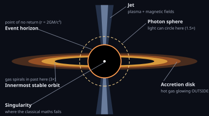
Event horizon: the boundary beyond which no signal can ever reach the outside universe. It is not a solid surface.
Photon sphere: where gravity is strong enough to bend light into a circle. Light here is balanced on a knife-edge.
Accretion disk: gas spiralling inward, heated to millions of degrees by friction. It glows brightly, and all of that glow comes from outside the horizon.
Jets: beams of plasma launched by magnetic fields and spin. They are not material escaping from inside.
| If this were squeezed… | Horizon radius |
|---|---|
| Earth | ≈ 9 mm (a marble) |
| The Sun | ≈ 3 km |
| A 10-Sun stellar black hole | ≈ 30 km |
| Sagittarius A* (our galaxy's) | ≈ 12 million km |
| M87* (giant) | ≈ 130 × Earth–Sun |
Light always moves at the same local speed. A black hole doesn't slow it down. It reshapes which directions count as “the future.”
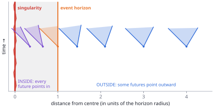
From any event, imagine a flash of light. Its spread through space and time makes a cone, and anything with mass must travel inside it. Your possible futures live in that cone.
Gravity tilts the cones. Near a black hole they lean inward more and more. At the horizon, the outward edge of the cone lines up exactly with the horizon. Inside, every future direction points to smaller radius.
In Newton's picture, escape is just about speed. In relativity, inside the horizon there is no path into your future that leads outward. A rocket of unlimited power still has to stay inside its own light cone, and the whole cone points inward.
Crossing the event horizon of a large black hole is not dramatic for the person falling in. The drama is in what outside observers see.
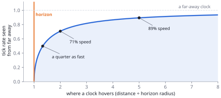
Most black-hole myths come from mixing these up:
Your watch reaches the horizon in a finite time. Distant observers see your signals arrive more and more delayed and redshifted, so you seem to freeze and fade. Both are true. They describe different things.
Light climbing out of a gravity well arrives with less energy, shifted toward red. That isn't “tired light.” It's how clocks at different heights compare in curved spacetime. The factor involved is (1 − rs/r), which heads to zero at the horizon.
“Space and time swap places” is a popular shortcut. The real point is deeper: inside, the singularity is not a place you could steer around. It's a moment you can't avoid.
In the usual Schwarzschild coordinates, the labels for “radius” and “time” change character at the horizon. But coordinates are just labels, and other maps are perfectly smooth there. The statement that holds in every coordinate system is about causes and effects: inside, no future path returns to the outside.
In the ideal, non-spinning black hole, the singularity lies ahead in time for anyone inside. Moving toward it is less like being pulled toward a distant object and more like being unable to stop tomorrow from arriving.
The diagram on the right is a Penrose diagram: the whole infinite spacetime squeezed onto one page, with light always moving at 45°. A star collapses (yellow), a horizon forms (orange), and anyone who crosses it (purple) is carried to the singularity, drawn as a jagged line across the top. It is a time, not a point in space.
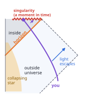
What hurts isn't gravity's strength. It's the difference in pull from one end of your body to the other.
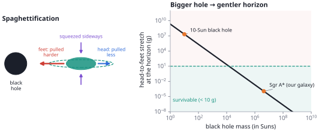
The same effect raises ocean tides on Earth: the Moon pulls the near side of Earth slightly harder than the far side. Near a compact mass the difference becomes enormous. You get stretched radially and compressed from the sides. Physicists really do call this spaghettification.
The horizon radius grows in step with the mass. So at the horizon, tidal stretching actually falls as the black hole gets heavier, by the square of the mass.
| Black hole | Stretch at horizon |
|---|---|
| 10 Suns | ≈ 20 million g: lethal well before |
| Sgr A*, 4 million Suns | ≈ 0.0001 g: unnoticeable |
Stars rotate, so the black holes they leave behind should too. Spin changes the geometry dramatically.
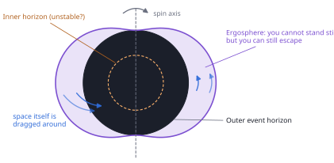
Roy Kerr found the exact solution for a spinning black hole in 1963. Its spin twists spacetime around it, an effect called frame dragging. Spin is measured by a = J/(Mc), where J is angular momentum. In natural units its size can't exceed one.
Just outside the horizon lies the ergosphere. Space there is dragged so hard that nothing can stay still relative to the distant stars; you're forced to swirl with it. You can still escape, though.
A particle enters the ergosphere and splits. One piece falls in with “negative” energy (as counted from far away). The other leaves with more energy than the original. The extra comes from the black hole's spin. Real jets are powered mainly by magnetic fields tapping spin energy, not literal particle splitting.
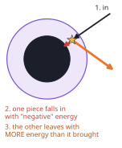
An infinity in an equation is not automatically a real physical object. It's usually a sign that the theory is being used outside its range.
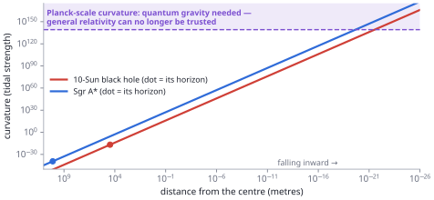
Some infinities come from a bad choice of map. Schwarzschild's original coordinates misbehave at the horizon, but switch to better coordinates and the problem disappears. The centre is different. Curvature measured in a way that every observer agrees on keeps growing:
The singularity theorems of Penrose and Hawking show something more general: under broad conditions, some paths through spacetime can't be continued. A falling clock would simply have no “next tick” in the theory. This is called geodesic incompleteness.
It does not prove there's a literal point of infinite density. It proves the classical description runs out.
General relativity treats spacetime as perfectly smooth. Everything else in nature is quantum, so somewhere that smoothness has to give.
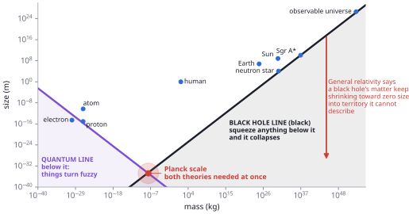
Atoms and particles obey quantum mechanics: they're fuzzy, uncertain and come in lumps. But spacetime in general relativity is classical: smooth and exact. At extreme curvature, the geometry itself should start to jitter quantum-mechanically, and treating it as smooth stops being a good approximation.
Quantum theories normally describe particles moving on a fixed stage of spacetime. In general relativity, the stage itself moves and bends. A complete theory has to describe quantum states of the stage, keep cause and effect working, and make predictions we can test.
At ordinary energies, gravity can be treated quantum-mechanically as an approximation (an effective field theory). It's only at Planck-scale energies, like a black hole's centre, that we have no reliable answer.
In 1974 Stephen Hawking added quantum fields to a curved spacetime and found that black holes should glow, very faintly.
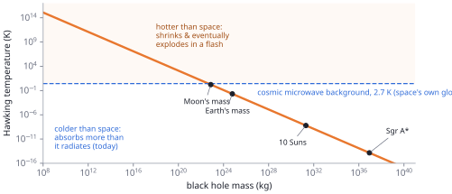
Hawking's semiclassical calculation (quantum fields on a classical curved background) predicts that a black hole emits radiation with a nearly thermal spectrum, as if it had a temperature:
Radiation carries energy away, so an isolated black hole slowly loses mass and could eventually evaporate. That's a staggeringly long time: about 10⁶⁷ years for a Sun-mass hole. This is where gravity, quantum theory and heat first meet in one formula.
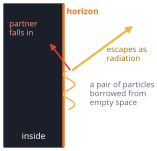
If something has a temperature, it should also have entropy, a count of its hidden internal arrangements. For black holes, that count turns out to be very strange.
Jacob Bekenstein proposed that a black hole's entropy is proportional to its horizon area. Hawking's calculation then fixed the exact number:
For a normal gas, entropy grows with volume: double the box, double the room for disorder. Here it grows with surface area. That hints that gravity's deepest degrees of freedom are organised in a fundamentally different way, which led to the idea of holography.
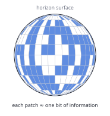
| Law | Ordinary thermodynamics | Black-hole mechanics |
|---|---|---|
| 0th | Temperature is uniform in equilibrium | Surface gravity is uniform on the horizon |
| 1st | Energy is conserved: dE = T dS + … | dM = (surface gravity / 8π) dA + spin and charge terms |
| 2nd | Entropy never decreases | Horizon area never decreases (classically) |
| 3rd | You can't reach absolute zero | You can't reduce surface gravity to zero |
Combine Hawking radiation with the rules of quantum mechanics and two of physics' most trusted principles collide head-on.
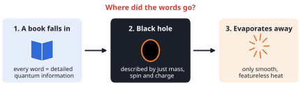
Quantum evolution is unitary: given the complete final state, you could in principle run time backwards and recover the starting state. Burn a book and the information is hopelessly scrambled in smoke, ash and heat, but not destroyed.
A black hole is described from outside by just mass, spin and charge (the “no-hair” idea). If it then evaporates into perfectly thermal radiation, which is random and featureless, nothing seems to record what fell in. A pure, fully specified quantum state would have turned into a mixed, random one. Quantum mechanics forbids that.
Something has to give:
Since 2019, new calculations have reshaped the information debate and point toward information coming back out.
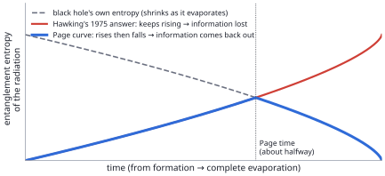
Early on, each bit of radiation is entangled with the black hole, so the radiation's entropy climbs. If nothing is lost, then after roughly half the hole has evaporated (the Page time), later radiation must start revealing the hidden correlations. The entropy falls back to zero when the hole is gone. Don Page worked this out in 1993.
New semiclassical calculations use quantum extremal surfaces and replica wormholes. When computing the radiation's entropy, they include a region behind the horizon called an island. With the island counted, the maths reproduces the Page curve.
Several research programmes are trying to build the theory that takes over where general relativity runs out.
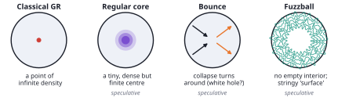
We can't look past the horizon, but we can test gravity right up to its edge.
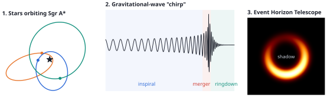
Decades of tracking stars at the Milky Way's centre reveal a compact object of about 4 million solar masses packed into a tiny volume.
Orbiting black holes ripple spacetime and spiral together. LIGO first detected this in 2015. The signal has three phases: inspiral (a rising “chirp”), merger (the horizons join, modelled with supercomputers) and ringdown (the new hole “rings” like a bell as it settles). The ringing tones depend only on mass and spin, which makes them a precise test of the Kerr prediction. This is called black-hole spectroscopy.
Radio dishes across the globe link up into an Earth-sized telescope. It imaged M87* in 2019 and Sgr A* in 2022. The dark centre is a shadow made by light being captured and bent. The bright ring is hot gas whose light has been lensed around the hole. It is not a photo of the horizon.
The weirdest claims about black holes are often where precision matters most.
Black holes aren't only dead ends. Gas spiralling into supermassive ones powers quasars, among the brightest objects in the universe, and launches jets that heat gas and shape how whole galaxies form stars. All of that energy comes from matter outside the horizon.
Event horizon: the boundary of no escape; a causal limit, not a surface.
Geodesic: the straightest possible path through curved spacetime.
Proper time: the time measured by a clock carried along a path.
Light cone: all the directions light can travel from an event; it bounds your possible futures.
Trapped surface: a closed surface where even outward-going light converges.
Singularity: where classical spacetime cannot be extended; paths end and curvature diverges.
Ergosphere: the region around a spinning hole where nothing can stand still.
Entropy: a measure of hidden microscopic arrangements, or missing information.
Unitarity: the quantum rule that information and total probability are preserved over time.
Page time: the moment, about halfway through evaporation, when radiation entropy should peak.
Quasinormal modes: the “ringing tones” of a disturbed black hole settling down.
Quantum gravity: the hoped-for quantum theory of gravity and spacetime.
NASA Science, Black Holes and Anatomy of a Black Hole. science.nasa.gov/universe/black-holes/
NASA, 10 Questions You Might Have About Black Holes. science.nasa.gov
Stanford Encyclopedia of Philosophy, Singularities and Black Holes. plato.stanford.edu/entries/spacetime-singularities/
Hawking, S. (1976). Black holes and thermodynamics. Physical Review D 13, 191. doi:10.1103/PhysRevD.13.191
Almheiri, A. et al. (2021). The entropy of Hawking radiation. Reviews of Modern Physics 93, 035002. doi:10.1103/RevModPhys.93.035002
Lessons from the information paradox (2022). Physics Reports. doi:10.1016/j.physrep.2021.10.001
Mann (2026). Black-hole thermodynamics. Nature Reviews Physics. doi:10.1038/s42254-026-00942-9
Event Horizon Telescope Collaboration, M87* (2019) and Sgr A* (2022) results. eventhorizontelescope.org
LIGO Scientific Collaboration. ligo.caltech.edu